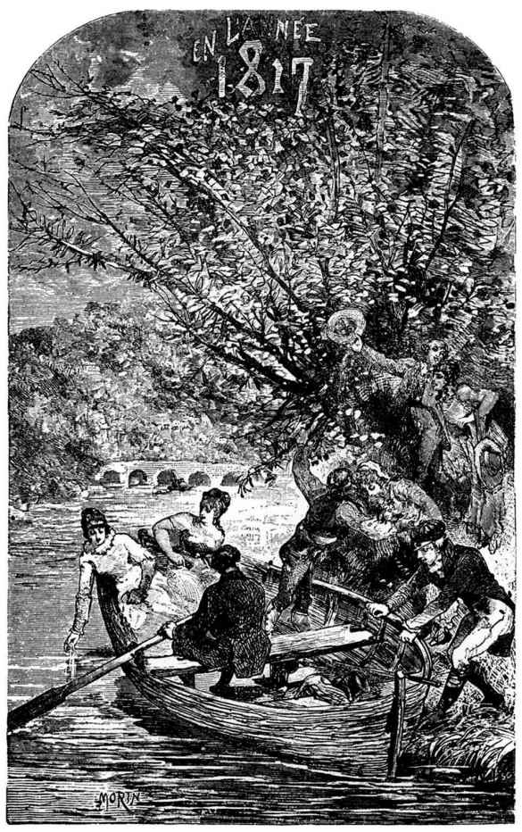

一八一七是路易十八用那种目空一切的君王气魄称为他登极第二十二年[1]的那一年。也是布吕吉尔·德·沙松先生扬名的那一年。所有假发店老板一心希望扑粉和御鸟再出现，都刷上了天蓝色灰浆并画上了百合花。[2]这是蓝舒伯爵穿上法兰西世卿服装，佩着红绶带，挺着长鼻子，有着轰动一时的人物所具有的那种奇特侧影的威仪，以理事员身份每礼拜日坐在圣日耳曼·代·勃雷教堂的公凳上的承平时期。蓝舒伯爵的功绩是这样的：他在任波尔多[3]市长期内，一八一四年三月十二日那天，把城池献给了昂古莱姆公爵，凭这项轰轰烈烈的功勋，他就得了世卿的禄位。在一八一七年，四岁到六岁的男孩都戴一种极大的染色羊皮帽，成了风行一时的时装，帽子两旁有耳遮，颇像爱斯基摩人的高统帽。法国军队，仿奥地利式样，穿上了白军服，联队改称为驻防部队，不用番号，而冠以行省的名称。拿破仑还在圣赫勒拿岛，由于英国人不肯供应蓝呢布，他便翻穿旧衣服。在一八一七年，佩勒格利尼正歌唱，比戈第尼姑娘正跳舞，博基埃正红及一时，奥德利还没有出世。沙基夫人继福利奥佐[4]而起。在法国还有普鲁士人。[5]德拉洛先生[6]成了著名的人物。正统江山在斩了普勒尼埃、加尔波诺和托勒龙的手、又斩了他们的头[7]以后地位才宣告稳固。大臣塔列朗[8]王爷和钦命财政总长路易教士，好像两个巫师一样，相顾而笑，[9]他们两个都参加过一七九〇年七月十四日在马尔斯广场举行的联邦弥撒，塔列朗以主教资格主祭，路易助祭。在一八一七年，就在那马尔斯广场旁边的小路上，发现了几根蓝漆大木柱倒在雨水和乱草里腐烂，柱上的金鹰和金蜂都褪了色，只剩下一点痕迹。那些柱子是两年前开五月会议[10]时搭建御用礼台用的。驻扎在大石头附近的奥地利军队的露营部队已把它们烧得遍体焦痕了。其中的两三根已被那些露营部队当做柴火烧掉了，并还烘过日耳曼皇军的巨掌。五月会议有这样一个特点，那就是五月会议是六月间在马尔斯广场上举行的。在一八一七年里，有两件事是人人知道的：伏尔泰-都格事件和鼻烟壶上刻的宪章问题。巴黎最新的骇人消息是杜丹的罪案，杜丹曾把他兄弟的脑袋丢在花市的水池里。海军部开始调查海船墨杜萨号事件，这使肖马勒蒙羞，热利果光采。塞尔夫上校赴埃及去做沙里蒙总督。竖琴街的浴宫做了一个修桶匠的店面。当时在克吕尼宅子的八角塔的平台上，还可以看见一间小木板房子，那是梅西埃的天文台，就是做过路易十六的海军天文官的梅西埃。杜拉公爵夫人在她那间陈设了天蓝缎交叉式家具的客厅里对着三四个朋友朗诵她作的那篇未经发表的《舞力卡》。卢浮宫里的“N”[11]正被刮去。奥斯特里茨桥退位了，改名为御花园桥，那种双关的隐语把奥斯特里茨桥和植物园[12]都同时隐没了。路易十八拿起《贺拉斯》[13]，用指甲尖划着读，特别注意那些做皇帝的英雄和做王子的木鞋匠，因为他有双重顾虑：拿破仑和马蒂兰·布吕诺[14]。法兰西学院的征文题目是《读书乐》。伯拉先生经官府承认确有辩才。在他的培养下，未来的检察长德勃洛艾已初露头角，立志学习保尔-路易·古利埃的尖刻。那年有个冒充里昂[15]的马尚吉，随后又有个冒充马尚吉的达兰谷。《克勒尔·达尔伯》和《马勒克-亚岱尔》被称为两部杰作。歌丹夫人被推为当时的第一作家。法兰西学院任人把院士拿破仑·波拿巴从它的名册上除名。国王命令在昂古莱姆[16]设立海军学校，因为昂古莱姆公爵是个伟大的海军大臣，昂古莱姆城就必然具有海港的一切优越条件，否则君主制就失了体统了。法兰柯尼[17]在他的布告上加上一些有关骑术的插图，吸引了街上的野孩子，内阁会议曾经热烈讨论应否容许他那样做。巴埃先生，《亚尼丝阿》的作者，颊上生了一颗肉痣的方脸好人，常在主教城街沙塞南侯爵夫人家里布置小型家庭音乐会。所有的年轻姑娘都唱爱德蒙·热罗作词的《圣阿卫尔的隐者》。《黄矮子报》改成了《镜报》。朗布兰咖啡馆抬出皇帝来对抗那家拥护波旁王室的瓦洛亚咖啡馆。人家刚把西西里的一个公主嫁给那位已被卢韦尔[18]暗中注意的贝里公爵。斯达尔夫人[19]去世已一年。近卫军老喝马尔斯[20]小姐的倒彩。各种大报都只一点点大，篇幅缩小，但是自由还是大的。《立宪主义者报》是拥护宪政的。《密涅瓦报》把“Chateaubriand”（夏多布里昂）写成“Chateaubriant”。资产阶级借了写错了的那个“t”字大大嘲笑这位大作家。在一些被收买了的报纸里，有些妓女式的新闻记者辱骂那些在一八一五年被清洗的人们，大卫[21]已经没有才艺了，亚尔诺[22]已经没有文思了，卡诺[23]已经没有羞耻了，苏尔特[24]从来没有打过胜仗，拿破仑确也没有天才。大家都知道，通过邮局寄给一个被放逐的人的信件是很少寄到的，警察把截留那些信件作为他们的神圣任务。那种事由来已久，被放逐的笛卡儿[25]便诉过苦。大卫为了收不到他的信件在比利时的一家报纸上发了几句牢骚，引起了保王党报章的兴趣，借此机会，把那位被放逐者讥讽了一番。说“弑君犯”或“投票人”[26]，说“敌人”或“盟友”[27]，说“拿破仑”或“布宛纳巴”[28]，一字之差，可以在两人中造成一道鸿沟。一切头脑清楚的人都认为这革命的世纪已被国王路易十八永远封闭了，他被称为“宪章的不朽的创作者”。在新桥的桥堍平地，准备建立亨利四世[29]铜像的石座上已经刻上“更生”两字。比艾先生在戴莱丝街四号筹备他的秘密会议，以图巩固君主制度。右派的领袖在严重关头，老是说：“我们应当写信给巴柯。”加奴埃、奥马阿尼、德·沙伯德兰诸人正策划日后所谓的“水滨阴谋”，他们多少征得了御弟[30]的同意。“黑别针”在另一方面也有所策动。德拉卫德里和特洛果夫正进行谈判。多少具有一些自由思想的德卡兹[31]先生正掌握实权。夏多布里昂每天早晨立在圣多米尼克街二十七号的窗子前面，穿着长裤和拖鞋，一条马德拉斯绸巾裹着他的灰白头发，眼睛望着一面镜子，全套牙科手术工具箱开在面前，修着他的美丽的牙齿，一面向他的书记毕洛瑞先生口述《君主与宪章》的诠言。权威批评家称赞拉封而不称赞塔尔马[32]。德·菲勒茨[33]先生签名A，霍夫曼[34]先生签Z。查理·诺缔埃[35]正创作《泰莱斯·阿贝尔》。离婚被禁止了。中学校改称中学堂。衣领上装一朵金质百合花的中学生因罗马王[36]问题互相斗殴。宫廷侦探向夫人殿下[37]递报告，说奥尔良公爵[38]的像四处悬挂，并说他穿轻骑将军制服的相貌比穿龙骑将军制服的贝里公爵还好看是件非常不妥的事。巴黎自筹经费把残废军人院的屋顶重行装了金。正派人彼此猜问：德·特兰克拉格先生在某种和某种情形下会怎样处理？克洛塞尔·德·蒙达尔先生和克洛塞尔·德·古塞格先生在许多方面意见分歧，德·沙拉伯利先生不得意。喜剧家比加尔，戏剧学院（喜剧家莫里哀也不曾当选的那个戏剧学院）的院士，在奥德翁戏院公演《两个菲力浦》，在那戏院的大门头上，揭去了的字还显明地露着“皇后戏院”的字迹。有些人对古涅·德·蒙达洛的态度不一致。法布维埃是暴动分子，巴武是革命党人。贝里西埃书店印行了一部伏尔泰文集，题名为《法兰西学院院士伏尔泰文集》。那位天真的发行人说：“这样做可以招引买主。”一般舆论认为查理·罗丛先生是本世纪的天才，他已开始受人羡慕，那是光荣的预兆，并且有人为他写了一句这样的诗：
鹅雏[39]纵能飞，无以匿其蹼。
红衣主教费什既不肯辞职，只得由亚马齐总主教德班先生管辖里昂教区。瑞士和法兰西两国关于达泊河流域的争执因杜福尔统领的一篇密呈而展开了，从此他升为将军。不闻名的圣西门[40]正计划他的好梦。科学院有过一个闻名于世的傅立叶，后世已把他忘了，我不知道从哪个角落里又钻出了另一个无名的傅立叶[41]，后世却将永志勿忘。贵人拜伦初露头角；米尔瓦把他介绍给法兰西，在一篇诗的注解中有这样的词句：“有某贵人拜伦者……”大卫·德·昂热[42]正试制大理石粉。加龙教士在斐扬死巷向一小群青年教士称赞一个无名的神甫，这人叫费里西德·罗贝尔，他便是日后的拉梅耐[43]。一只煤烟腾漫、扑扑作声的东西，在杜伊勒里宫的窗子下面、王家桥和路易十五桥间的塞纳河上来回走动，声如泅水的狗，那是一件没有多大好处的机器，一种玩具，异想天开的发明家的一种幻梦，一种乌托邦——一只汽船。巴黎人对那废物漠然视之。德·沃布兰先生用强力改组了科学院，组织、人选，一手包办，轰轰烈烈地安插了好几个院士，自己却落了一场空。圣日耳曼郊区和马桑营都期望德纳福先生做警署署长，因为他虔信天主。杜彼唐[44]和雷加密[45]为了耶稣基督的神性问题在医科学校的圆讲堂里争论起来，弄到挥拳相对。居维叶[46]一只眼睛望着《创世记》，另一只眼睛望着自然界，为了取媚于迷信的反动势力，于是用化石证实经文，用猛犸颂扬摩西。佛朗沙·德·诺夫沙多先生，帕芒蒂埃[47]的一个可敬的继起者，千方百计要使“pomme de terre”（马铃薯）读成“帕芒蒂埃”，但毫无结果。格列高利神甫，前主教，前国民公会代表，前元老院元老，在保王党的宣传手册里竟成了“无耻的格列高利”。我们刚才所用的这一词组“竟成了……”是被罗叶-柯拉尔认作新词的。在耶拿桥的第三桥洞下，人们还可以从颜色的洁白上认出那块用来填塞布吕歇尔[48]在两年前，为了炸桥而凿的火药眼的新石头。有一个人看见阿图瓦伯爵走进圣母院，那个人大声说：“见他妈的鬼！我真留恋我从前看见波拿巴和塔尔马手挽手同赴蛮舞会的那个时代。”法庭传讯了他，认为那是叛徒的口吻，六个月监禁。一些卖国贼明目张胆地露面了，有些在某次战争前夕投敌的人完全不隐藏他们所得的赃款，并在光天化日之下，不顾羞耻，卖弄他们的可耻的富贵。里尼和四臂村[49]的一些叛徒，毫不掩饰他们爱国的丑行，还表示他们为国王尽忠的热忱，竟忘了英国公共厕所内墙上所写的“Please adjust your dress before leaving．”[50]
这些都是在一八一七年（现在已没有人记得的一年）发生过的一些事。拉拉杂杂，信手拈来。这些特点历史几乎全部忽略了，那也是无可奈何的事，因为实在记不胜记。可是这些小事（我们原不应当称之为小）都是有用的；人类没有小事，犹如植物没有小叶，世纪的面貌是岁月的动态集成的。
在一八一七那年里，四个巴黎青年开了一个“妙玩笑”。
[1] 法国大革命在一七九三年推翻了君主专制，国王路易十六经国民公会判处死刑，王党奉路易十七（路易十六的儿子）为国王继承人，路易十七在一七九五年死在狱中，路易十六之弟路易十八被认为继承人，他是在一八一五年拿破仑逊位才回国登王位的，但是他不承认王室的统治是中断了的，认为他的王权应从一七九五年算起，所以一八一七年是他的统治的第二十二年。
[2] 百合花，法国波旁王朝的标志。贵族都戴假发，并以粉扑发为美。“御鸟”，一种髻的名称。
[3] 波尔多（Bordeaux），法国西南部滨大西洋的商业城市。拿破仑和英国争霸，封锁了大陆，商业资产阶级深感痛苦，一八一四年三月，英国军队从西班牙侵入法国南部时，他们把城池献给了敌人。昂古莱姆公爵是路易十八的侄儿，随着英国军队进入波尔多。
[4] 佩勒格利尼（Pellegrini），那不勒斯歌手，当时在巴黎演出。比戈第尼姑娘（Bigottini），当时的舞蹈家。博基埃（Potier），当时的喜剧演员。奥德利（Odry），喜剧演员。沙基夫人（Mme Saqui）和福利奥佐（Forioso），第一帝国时期最著名的杂技演员，走绳索者。
[5] 占领军在一八一八年才撤离法国。
[6] 德拉洛（Delalot，1772—1842），极端保王派，《辩论日报》的编辑。
[7] 普勒尼埃、加尔波诺、托勒龙，秘密会社社员，因赞成处死路易十六被处死。斩手又斩首是法国对弑王者的刑罚。
[8] 塔列朗（Talleyrand，1754—1838），公爵，原是拿破仑的外交大臣，一八〇七年免职后勾结国外势力。一八一四年三月俄普联军攻入巴黎，塔列朗组织临时内阁，迎接路易十八回国。
[9] 巫师共同作弊，彼此心里明白，所以相顾而笑。
[10] 五月会议，拿破仑于一八一五年召集的一种人民代表会议。
[11] “N”，拿破仑的徽志。
[12] 巴黎植物园，初建于十七世纪初，一七九三年起曾加扩建。
[13] 《贺拉斯》（Horace），高乃依根据罗马历史故事所作的悲剧。
[14] 马蒂兰·布吕诺（Mathurin Bruneau），当时名人之一，木鞋匠出身，所以路易十八对他心存戒心。
[15] 夏多布里昂（Chateaubriand，1768—1848），法国作家，消极浪漫主义文学的创始人。
[16] 昂古莱姆（Angoulême），城名，在内地，不在海滨。
[17] 法兰柯尼，养马官。
[18] 卢韦尔（Louvel），制造马鞍的工人，他刺杀了贝里公爵，贝里公爵是路易十八的侄儿，杀他，是想绝王族之后。
[19] 斯达尔夫人（Madame de Staël），浪漫主义作家。
[20] 马尔斯（Mars），喜剧演员。
[21] 大卫（David），油画家，曾任国民公会代表，继为拿破仑所器重。
[22] 亚尔诺（Arnault），诗人和寓言家。
[23] 卡诺（Carnot），数学家，国民公会代表，公安委员会委员，共和国十四军的创编者，一七九四年参加热月九日反革命政变。
[24] 苏尔特（Soult），拿破仑部下的元帅，奥斯特里茨一役居首功。
[25] 笛卡儿（Descartes，1569—1650），法国二元论哲学家。
[26] 指投票赞成斩决路易十六的代表。
[27] 指帮助波旁王室复辟的奥、英、俄、普等同盟国。
[28] 拿破仑是帝号。拿破仑姓“Bonaparte”（波拿巴），是由他原来的意大利姓“Buonaparte”（读如“布宛纳巴”），经过法国化后变成的。仇视他的人按照意大利语音叫他的姓，带有表示他不是法国土著的意思。
[29] 亨利四世，波旁王朝第一代国王。
[30] 御弟，指路易十八之弟阿图瓦伯爵，即后来继承路易十八王位的查理十世。
[31] 德卡兹（Decazes），路易十八的警务大臣。当时的自由思想是维护资产阶级个人权利的学说。
[32] 拉封（Lafon）和塔尔马（Talma），当时的悲剧演员，后来曾受拿破仑赞赏。
[33] 菲勒茨（Féletz），拥护古典主义反对浪漫主义的批评家。
[34] 霍夫曼（Hoffman），戏剧作家和批评家。
[35] 查理·诺缔埃（Charles Nodier，1783—1844），法国作家。
[36] 罗马王，拿破仑和玛丽亚·路易莎所生之子。
[37] 夫人殿下，指路易十八的弟妇，阿图瓦伯爵夫人，贝里公爵的母亲。
[38] 奥尔良公爵，指一八三〇年继查理十世（即阿图瓦伯爵）为王的路易-菲力浦。
[39] “鹅雏”（l’oison）和“罗丛”（loyson）同音，鹅雏是小笨蛋的意思。
[40] 圣西门（Saint-Simon），空想社会主义者。
[41] 这一个傅立叶是随拿破仑出征埃及的几何学家，著有《出征埃及记》。另一傅立叶是空想社会主义者。
[42] 大卫·德·昂热（David d’Angers，1788—1856），法国雕塑家。
[43] 拉梅耐（Lamennais，1782—1854），法国神甫，政论家。
[44] 杜彼唐（Dupuytren），法国外科医生。
[45] 雷加密（Récamier），法国内科医生。
[46] 居维叶（Cuvier），法国自然科学家。
[47] 帕芒蒂埃（Parmentier，1737—1813），第一个在法国种植马铃薯的人。
[48] 布吕歇尔（Blücher，1742—1819），参加滑铁卢战争的普鲁士军将领。
[49] 一八一五年六月十六日，即滑铁卢战役的前两日，拿破仑在里尼击败普鲁士军队，又在四臂村击败英国军队。两地都在比利时境内。
[50] 英文：“出去以前，请先整理衣服。”